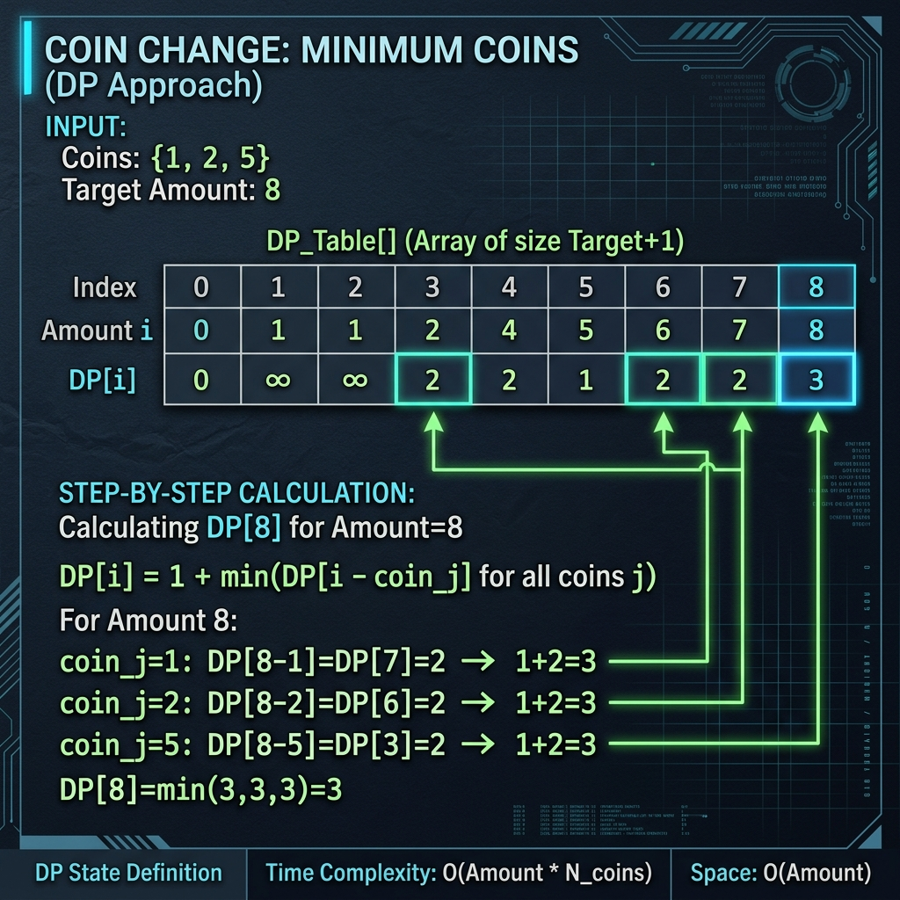

Optimizing resource allocation is a core challenge in computer science, and the Coin Change problem is one of its most famous representations. In this puzzle, you are given an array of coin denominations (such as $1, $2, and $5) and a target amount of money. Your task is to calculate the minimum number of coins required to make up that exact amount. If it's impossible to form the target amount with the given coins, you should return -1. We assume that we have an infinite supply of each coin denomination.
At first glance, a greedy strategy seems like the obvious choice: simply pick the largest coin value that fits, subtract it, and repeat. While this works for standard currency systems (like US dollars), it fails on custom coin systems. For instance, if your coins are [1, 3, 4] and you need to make 6, a greedy approach would pick 4, leaving you with two 1s (totaling 3 coins: 4 + 1 + 1). However, the optimal solution is actually two 3-value coins (3 + 3 = 6), which only takes 2 coins. Because greedy choices can lead to sub-optimal outcomes, we must use dynamic programming to check all options efficiently.

Imagine you are a clerk at a post office sorting stamps. You want to keep a ledger that records the fewest stamps required to mail packages of any value from $0 up to $11.
To fill in the entry for $11, you look at your stamp drawer, which has $1, $2, and $5 stamps. If you place a $5 stamp on the package, the remaining value is $6. You look up your ledger's entry for $6 and add 1 stamp to it. If you choose a $2 stamp instead, the remaining value is $9; you look up the entry for $9 and add 1. If you use a $1 stamp, you check the entry for $10 and add 1. By comparing these three options, you find the smallest stamp count and write it in your ledger for $11.
Solving the Problem
Bottom-Up Dynamic Programming (O(n * amount) Time, O(amount) Space)
To solve this problem systematically, we construct a table dp of size amount + 1, where each index i represents the minimum coins needed to make the value i.
- Base Case: We set
dp[0] = 0because it takes zero coins to make an amount of zero. - Initialization: We fill all other indices from
1toamountwith a sentinel value representing infinity (e.g.,amount + 1), indicating that these values are currently unreachable. - State Transition: For each sub-amount
afrom1toamount, we evaluate each coin denominationc. Ifa - c >= 0, we check if using coincgives us a better count. Our update formula is:dp[a] = Math.min(dp[a], 1 + dp[a - c]).
dp[amount] remains greater than amount, we know the target is unreachable and return -1. Otherwise, we return the calculated minimum value.
Tracing the Logic
Let's trace this logic for coins = [1, 2, 5] and a target amount = 5:
- Start:
dpis initialized to[0, 6, 6, 6, 6, 6]. - Amount 1: The only coin that fits is
1. We calculatedp[1] = Math.min(6, 1 + dp[0]) = 1. - Amount 2: We can use coin
1(gives1 + dp[1] = 2) or coin2(gives1 + dp[0] = 1). We pick the minimum, sodp[2] = 1. - Amount 3: Using coin
1gives1 + dp[2] = 2. Using coin2gives1 + dp[1] = 2. Thus,dp[3] = 2. - Amount 4: Using coin
1gives1 + dp[3] = 3. Using coin2gives1 + dp[2] = 2. Thus,dp[4] = 2. - Amount 5: We evaluate all three coins: coin
1(gives1 + dp[4] = 3), coin2(gives1 + dp[3] = 3), or coin5(gives1 + dp[0] = 1). The minimum is1, sodp[5] = 1.
1 (since we have a single $5 coin).
Key Explanations
Here is why the main logic in the solution is important:
Arrays.fill(dp, amount + 1);: Uses a logical equivalent to infinity that fits in standard integer values and avoids overflow errors (which would occur if we usedInteger.MAX_VALUEand then added 1 to it).if (a - coin >= 0): Ensures we only attempt to construct target amounts using coin denominations that are less than or equal to the target value.Math.min(dp[a], 1 + dp[a - coin]);: Compares our current best coin count for amountawith the option of using coinc, choosing the path with fewer coins.
Java Implementation Code
Here is the complete Java code showing this bottom-up dynamic programming approach. The code initializes the table and iterates through all possible sub-amounts, checking each coin denomination dynamically.
package io.practise.dsa;
import java.util.Arrays;
public class CoinChange {
// Bottom-Up Dynamic Programming: Time O(N * Amount), Space O(Amount)
public int coinChange(int[] coins, int amount) {
if (coins == null || coins.length == 0 || amount < 0) {
return -1;
}
int[] dp = new int[amount + 1];
// Fill with a sentinel value representing infinity
Arrays.fill(dp, amount + 1);
dp[0] = 0; // Base case: 0 amount needs 0 coins
for (int a = 1; a <= amount; a++) {
for (int coin : coins) {
if (a - coin >= 0) {
dp[a] = Math.min(dp[a], 1 + dp[a - coin]);
}
}
}
// If the target amount remains set to infinity, it cannot be reached
return dp[amount] > amount ? -1 : dp[amount];
}
public static void main(String[] args) {
CoinChange solver = new CoinChange();
int[] coins = {1, 2, 5};
int amount = 11;
System.out.println("--- Coin Change Demonstration ---");
System.out.println("Available Coins: " + Arrays.toString(coins));
System.out.println("Target Amount: " + amount);
int result = solver.coinChange(coins, amount);
System.out.println("Minimum coins required: " + result); // Expected: 3 (5 + 5 + 1)
}
}
Conclusion & Complexity Analysis
This bottom-up approach runs in O(N * amount) time, where N is the number of coin denominations, and uses O(amount) auxiliary space. By avoiding the pitfalls of a pure greedy search, this dynamic programming approach guarantees we find the mathematically optimal solution for any set of coin values.